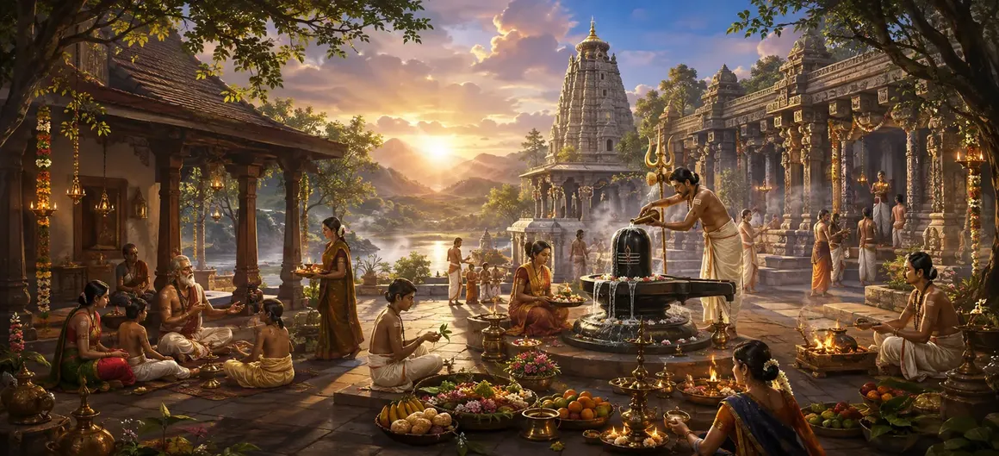

अनिवार्य एवं वैकल्पिक संस्कार
वायवीय संहिता का तिरसठवाँ अध्याय आध्यात्मिक प्रथाओं को अनिवार्य दैनिक दायित्वों (नित्य कर्म) और लक्ष्य-उन्मुख वैकल्पिक संस्कार (काम्य कर्म) में वर्गीकृत करता है।
ऋषि वायु ऋषियों को दैनिक पूजा के माध्यम से अटूट अनुशासन बनाए रखने का निर्देश देते हैं, साथ ही यह भी समझते हैं कि विशिष्ट धार्मिक उपलब्धियों के लिए वैकल्पिक संस्कार कब और कैसे किए जा सकते हैं।
यह अध्याय साधक के दैनिक और सामयिक आध्यात्मिक जीवन को व्यवस्थित करने के लिए संरचनात्मक स्पष्टता प्रदान करता है।
अध्याय 63 की मुख्य बातें
दैनिक कर्तव्य (नित्य)
भगवान शिव की अचूक दैनिक पूजा।
वैकल्पिक संस्कार (काम्या)
विशिष्ट इच्छाओं के लिए किए गए अभ्यास।
आध्यात्मिक अनुशासन
आध्यात्मिक चूक के बिना स्थिरता बनाए रखना।
धर्मी संतुलन
उत्कृष्ट आकांक्षाओं के साथ कर्तव्य का सामंजस्य स्थापित करना।
मन की पवित्रता
नियमित अनुष्ठानों के माध्यम से निरंतर सफाई।
आगे का रास्ता
अध्याय 64 में विस्तृत काम्य संस्कारों की खोज।
इस अध्याय में मुख्य विषय
- 01नित्य एवं काम्य संस्कार की परिभाषा एवं महत्व→
- 02दैनिक अनिवार्य पूजा (नित्य कर्म) की आवश्यकता→
- 03इच्छा-आधारित वैकल्पिक संस्कार (काम्या कर्म) को समझना→
- 04आध्यात्मिक चूक के बिना अनुष्ठानों को नियंत्रित करने वाले नियम→
- 05उच्च आध्यात्मिक विकास के साथ दैनिक कर्तव्य का सामंजस्य→
- 06अनुशासित अनुष्ठान निष्पादन के आध्यात्मिक फल→
- 07अध्याय 64 की ओर (काम्या संस्कार का विवरण)→
नित्य और कर्म की परिभाषा और महत्व
ऋषि वायु बताते हैं कि कर्तव्यों को मोटे तौर पर नित्य (अनिवार्य दैनिक क्रियाएं जो बिना किसी असफलता के शुद्ध करती हैं) और काम्य (विशिष्ट लक्ष्यों के लिए किए गए वैकल्पिक संस्कार) में विभाजित किया गया है।
साधक की आध्यात्मिक परिपक्वता और जीवन स्तर के आधार पर दोनों महत्वपूर्ण स्थान रखते हैं।
दैनिक अनिवार्य पूजा (नित्य कर्म) की आवश्यकता
नित्य पूजा का त्याग कभी नहीं करना चाहिए। यह मानसिक संतुलन बनाए रखता है, दैनिक जमा होने वाली अशुद्धियों को दूर करता है और आत्मा को दैवीय कृपा में स्थापित करता है।
भक्ति में निरंतरता अटल आध्यात्मिक शक्ति का निर्माण करती है।
इच्छा-आधारित वैकल्पिक संस्कार (काम्या कर्म) को समझना
काम्या अनुष्ठान उन आकांक्षी लोगों के लिए डिज़ाइन किया गया है जो विशिष्ट सामग्री या आध्यात्मिक वरदान, जैसे स्वास्थ्य, समृद्धि, या उच्च स्वर्गीय निवास की तलाश करते हैं।
इन्हें शास्त्रीय नियमों और नेक इरादे के कड़ाई से पालन के साथ आयोजित किया जाना चाहिए।
आध्यात्मिक चूक के बिना अनुष्ठानों को नियंत्रित करने वाले नियम
ऋषि ने पूजा में लापरवाही को रोकने के लिए सावधानियों की रूपरेखा दी, चेतावनी दी कि दैनिक कर्तव्यों में चूक आध्यात्मिक ठहराव पैदा करती है।
समय की पाबंदी, मानसिक शुद्धता और भक्ति दोषरहित अभ्यास के आधार हैं।
उच्च आध्यात्मिक विकास के साथ दैनिक कर्तव्य का सामंजस्य
भगवान शिव को प्रसाद के रूप में अनिवार्य अनुष्ठान करने से, सामान्य क्रियाएं मुक्ति के लिए शक्तिशाली माध्यम में बदल जाती हैं।
कर्तव्य बंधन नहीं रह जाता और सर्वोच्च समर्पण का कार्य बन जाता है।
अनुशासित अनुष्ठान निष्पादन के आध्यात्मिक फल
अनिवार्य और वैकल्पिक दिशानिर्देशों का ईमानदारी से पालन करने से मानसिक स्पष्टता, सांसारिक स्थिरता और अंततः आध्यात्मिक मुक्ति मिलती है।
साधक का जीवन ईश्वरीय व्यवस्था की उज्ज्वल अभिव्यक्ति बन जाता है।
अध्याय 64 की ओर (काम्या संस्कार का विवरण)
अध्याय 63 में अनिवार्य और वैकल्पिक संस्कारों का परिचय देने के बाद, ऋषि वायु अध्याय 64, 'काम्य संस्कारों का विवरण' सुनाने की तैयारी करते हैं।
यह अगला अध्याय विशिष्ट वैकल्पिक अनुष्ठानों और उनके लक्षित पुरस्कारों पर गहराई से प्रकाश डालेगा।
अध्याय 63 की मुख्य शिक्षाएँ
नित्य संगति
शिव की दैनिक पूजा कभी न छोड़ें।
काम्या फोकस
धार्मिक इच्छाओं के लिए लक्षित संस्कार।
चूक निवारण
आध्यात्मिक लापरवाही से बचाव.
अनुष्ठान संतुलन
दैनिक कर्तव्यों को आकांक्षाओं के साथ संतुलित करना।
शुद्ध समर्पण
सभी कार्यों को परमेश्वर को अर्पण करना।
काम्या प्रस्तावना
अध्याय 64 के लिए विस्तृत संस्कार स्थापित करना।
आध्यात्मिक चिंतन
नित्य कर्तव्य आध्यात्मिक जीवन की स्थिर धड़कन बनाते हैं, जबकि काम्य संस्कार दैवीय मार्गदर्शन के तहत धार्मिक आकांक्षाओं को पूरा करने के लिए जानबूझकर उठाए गए कदम हैं।
अध्याय 63 का संदेश जीना
भगवान शिव के साथ निरंतर संबंध सुनिश्चित करते हुए, एक स्थिर दैनिक आध्यात्मिक दिनचर्या के लिए प्रतिबद्ध रहें जिसे आप कभी नहीं तोड़ेंगे।
विशिष्ट जीवन लक्ष्यों का पीछा करते समय, अपने वैकल्पिक कार्यों को धर्म और भक्ति के साथ संरेखित करें।
अनुशासन को अपना सबसे बड़ा आभूषण बनने दें।
प्रमुख आध्यात्मिक अवधारणाएँ
अनिवार्य दैनिक धार्मिक कर्तव्य जो अभ्यासकर्ता को शुद्ध करते हैं।
विशिष्ट सांसारिक या आध्यात्मिक लक्ष्यों के लिए किए गए वैकल्पिक अनुष्ठान।
आध्यात्मिक साधना में अटूट समर्पण और निरंतरता।
दैनिक कर्तव्यों को छोड़ने के नकारात्मक कार्मिक परिणामों से बचना।
वैयक्तिक कार्यों को लौकिक धार्मिक व्यवस्था के साथ सुसंगत बनाना।
सभी कर्मों का फल सीधे भगवान शिव को अर्पित करना।
अध्याय सारांश
वायवीय संहिता अध्याय 63 आध्यात्मिक प्रथाओं को नित्य कर्म (अनिवार्य दैनिक कर्तव्य) और काम्य कर्म (वैकल्पिक इच्छा-आधारित संस्कार) में वर्गीकृत करता है, जिसमें स्थिरता, चूक की रोकथाम और दिव्य भक्ति के साथ कर्तव्य के सामंजस्य पर जोर दिया गया है। यह अध्याय अध्याय 64, 'काम्य संस्कारों का वर्णन' का मार्ग प्रशस्त करता है।
अक्सर पूछे जाने वाले प्रश्न
1. वायवीय संहिता अध्याय 63 का मुख्य विषय क्या है?
अध्याय 63 शैव अभ्यास में अनिवार्य दैनिक कर्तव्यों (नित्य कर्म) और वैकल्पिक इच्छा-आधारित संस्कार (काम्य कर्म) के भेद और निष्पादन पर केंद्रित है।
2. आध्यात्मिक जीवन में नित्य कर्म का क्या महत्व है?
अनिवार्य दैनिक कर्तव्य मन को लगातार शुद्ध करते हैं, आध्यात्मिक ठहराव को रोकते हैं और भगवान शिव के साथ एक अटूट संबंध बनाए रखते हैं।
3. ऋषियों को ये संस्कार कौन समझाता है?
ऋषि वायु एकत्रित ऋषियों को अनिवार्य और वैकल्पिक संस्कारों के सटीक वर्गीकरण और प्रक्रियाओं का विवरण देते हैं।
4. अध्याय 63 के बाद नेविगेशन के लिए अगला अध्याय कौन सा है?
नेविगेशन के लिए अगले अध्याय का शीर्षक 'काम्या संस्कार का विवरण' है।
"अडिग दैनिक अनिवार्य अनुष्ठानों और धार्मिक वैकल्पिक पालन के माध्यम से, साधक जीवन की हर धड़कन को भगवान शिव की शाश्वत लय के साथ संरेखित करता है।"
वायवीय संहिता के माध्यम से जारी रखें
अध्याय 63 अनिवार्य और वैकल्पिक संस्कारों का समापन करता है। काम्या संस्कार का वर्णन जारी रखें।